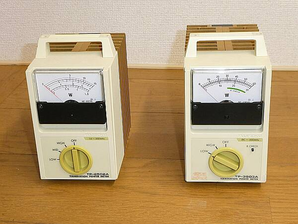
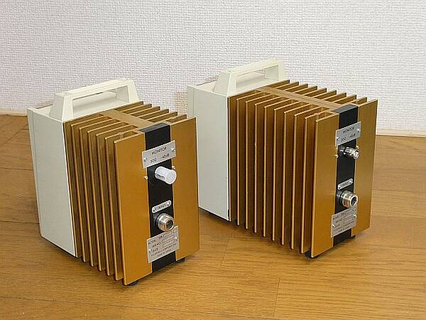
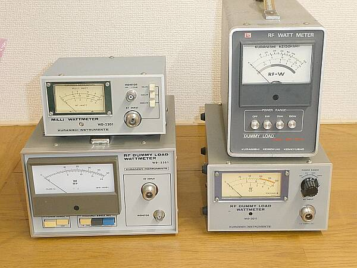
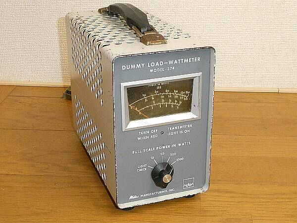
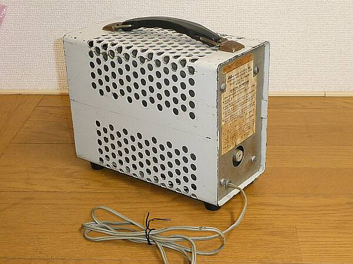
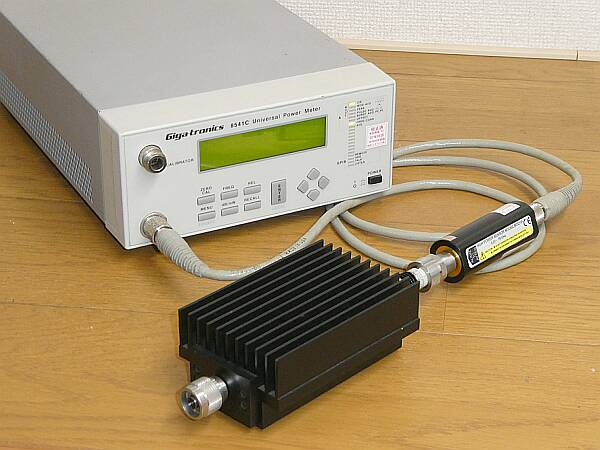

送信機の送信出力（電力）は気になります
ちゃんと動作しているのかどうか、時々点検したくなります
酷使すると、終段も痛んでパワー低下を起こすことも・・・
また送信機の点検・調整にも欠かせないものです（アンテナを繋いで外に電波を出せば、人様に迷惑をかける） |
|
終端型電力計
終端抵抗を内蔵しない通過型の電力計に対し、正しい例えば５２Ωの終端抵抗を内蔵しています
従って、送信機から見ると正しい負荷（仕様通りの負荷）を繋いでいることになります
終端抵抗：ダミー・ロードとも称されます（まさしく疑似負荷）
ここで計測される電力が、正しい送信出力となります
終段入力と、ここで計測された電力で、終段の効率も算出できます |

いわゆる計測機器として製品化されたもの
アマチュア無線の世界では、このフジソク製品はあまり知られていません
一般に知られているのは、今は無きＫＵＲＡＮＩＳＨＩ製品でしょう |
２つの違い パワー・レンジもそうですが検出方式が異なります
バッテリ・チェック・ボタンがあるほう（上写真右：６０W）は、熱電変換方式
なにもないほう（１５W）は、ダイオード検出方式
計測範囲は、いずれも～５００ＭＨｚです
熱電変換方式のものは、ＤＣから対応、ダイオード検出方式のものは、１．６ＭＨｚから

１９４７年の創業のフジソクは、日本電産コパル電子、日本電産（ニデック）と変遷
ニデックにとって計測機器は不要とされたようで、２０２２年には全て製造を終了 |
|

ＫＵＲＡＮＩＳＨＩ製品の一部です（終端電力計）
１３００MHｚまで対応するものや、Ｍａｘ２Ｗ以下３レンジと低電力を測るものなど
このほか、多くの種類がありましたし、リーダー電子ほかにも製品がありました
ただ１００Ｗが２アマ上限だった頃の製品で、２００Ｗレンジはほとんどなかったと思います |
|
こちらは油冷を採用した大電力に対応したもの
終端抵抗器がオイルに漬かっています（動かすと、ちゃぽちゃぽ音がします）
Ｂ＆Ｗ Ｍｏｄｅｌ ３７４
ＫＵＲＡＮＩＳＨＩ ＲＷ１０００Ｄは、このものを模したものでは？ |
 |
最大１５００Wスケールで、２－３０ＭＨｚ に対応
レンジは、１５/５０/３００/１５００Ｗフルスケールの４段
電源は、オイルの温度上昇を検知しアラートランプ（赤灯）を点灯させるためのものです
 |
|
電力測定としては、パワーアッテネータを採用し、測定器としてのパワーセンサを使用して
行う方法があり、きっとこの方法が正確さにおいては一番でしょう |

ＧＩＧＡＴＲＯＮＩＣＳ + ３０Ｗ（Ｐｅａｋ１５０Ｗ）アッテネータの組み合わせ例 |
|
| こうして改めてみると、いろんな種類、方式があります |
|